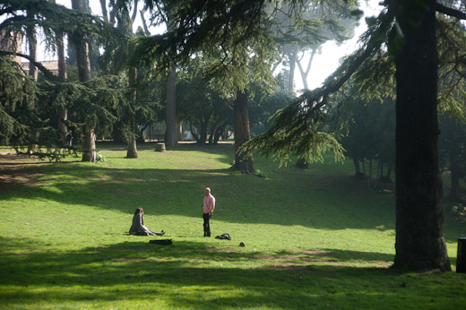

Favorite Park in Rome: Villa Celimontana

Moving onward in this to-date short series of my favorite places around Rome, following bookshops, is where I go to read. I’m not a reader who enjoys busy cafés and anyway Rome doesn’t invite that kind of reading either. I’m a bed-and-book-at-night reader, reminiscent of John Cheever’s desire that his books should be read, “in bed in an old house on a rainy night.” The impenetrable solitude of it seems to me perfect, like an egg in which all good is contained. But in the spring and summer especially I take my reading outside: to the park and to the beach.
Parks in a city are a necessity. Inside me is a deep need of green space, silence, the feel of the dirt on my feet, the birds singing in the absence of voices. I need to monitor the cycling of the seasons, to see buds burgeon, leaves whither and die. So lucky for me Rome has plenty of parks and, even luckier, I live with two parks nearby.
Villa Celimontana is a smallish park on the Caelian hill, one of the seven hills of ancient Rome. Back then the rich built their domus here and now, outside the park, there are a couple churches and a convent that tends a vegetable garden. Step inside the park’s gates and Rome’s chaotic traffic is replaced by the cacophony of lime-green parakeets. Umbrella pines burst green clouds against a blue sky and I spread out a blanket to read for as long as time allows.
On warm and sunny weekends the park can draw a crowd: families with kids kick a soccer ball around, friends smoke in circles and an occasional party sets up a table with balloons and snacks. I sink into my book’s pages, come up and watch teenage couples rolling over each other and toddlers trying to walk through the grass, sink back into the pages, until the sun begins to loll near the horizon urging me home to finish my reading there. I leave the park in a wonderful dreamy state induced by books and trees.
· · · · · · · · · · · · · · · · · · · ·